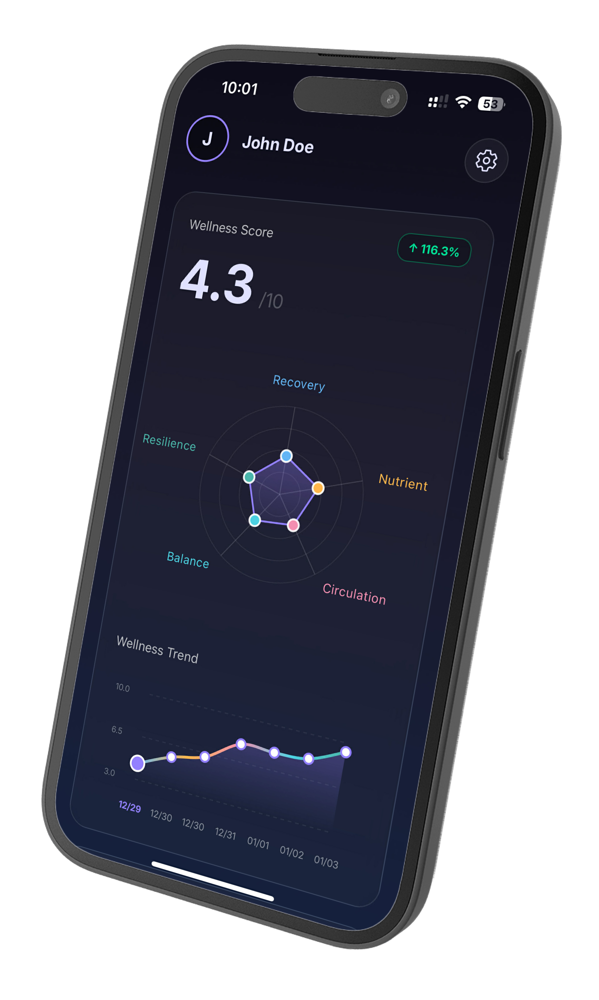

Backed by 10+ Peer-Reviewed Studies
What If Your Face Could Reveal Your Health?
One photo. 30 seconds. Insights that took doctors years to learn.
✓
Detect hidden nutrient deficiencies
✓
Track sleep quality without wearables
✓
Monitor hydration & circulation
Photos processed on-device
Research-backed analysis
No data stored or shared
Join 2,800+ others on the waitlist
"The scan suggested I was dehydrated and low on vitamin C. I got bloodwork done and my doctor confirmed both."